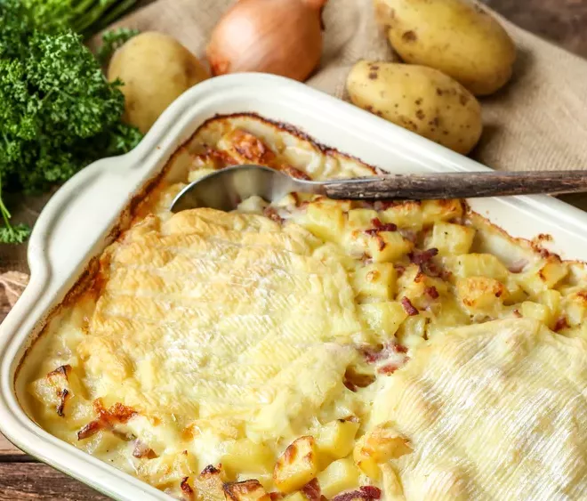

Tartiflette

Ingredienten
- 1kg aardappelen
- 3 uien
- 100g spekblokjes
- 1 sjalot
- 1 roblochon (kaas)
- 1 teentje knooflook
- 1dl room
- 1dl witte wijn
- boter
- peper
- zout
Bereiding
- 1 Verwarm de oven voor op 200° C. Schil de aardappelen en snij ze in dunne plakjes. Kook ze tot ze net niet gaar zijn.
- 2 2 Smelt een klontje boter in een pan met antiaanbaklaag en fruit de ui en de sjalot glazig.
Voeg er de spekblokjes aan toe en bak even mee.
- 3 Schik de helft van het mengsel in een ingevette ovenschaal (of verdeel he over individuele schaaltjes).
Snij de kaas in plakken (de korst mag eraan blijven) en verdeel de helft over de aardappelen.
Kruid met flink wat peper en niet te veel zout.
Herhaal met de rest van de aardappelen en eindig met de rest van de kaas.
- 4 Pers de teentjes knoflook en meng met de room en de witte wijn. Giet dit over de kaas.
Zet de tartiflette 30 minuten in de voorverwarmde oven.
Serveer met knapperige ijsbergsla en enkele plakjes gerookte ham, liefst uit de Savoie.